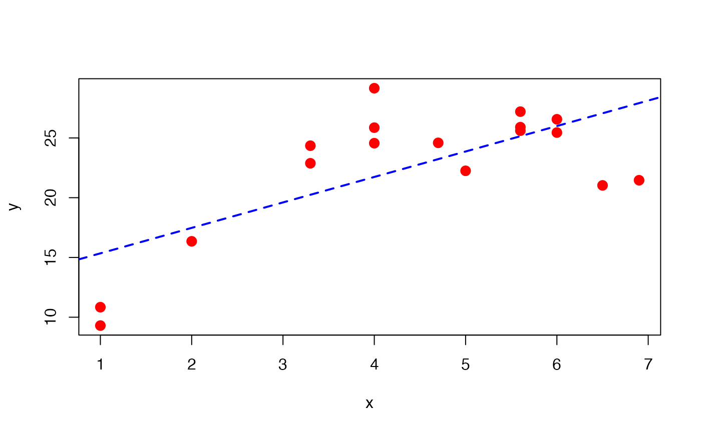
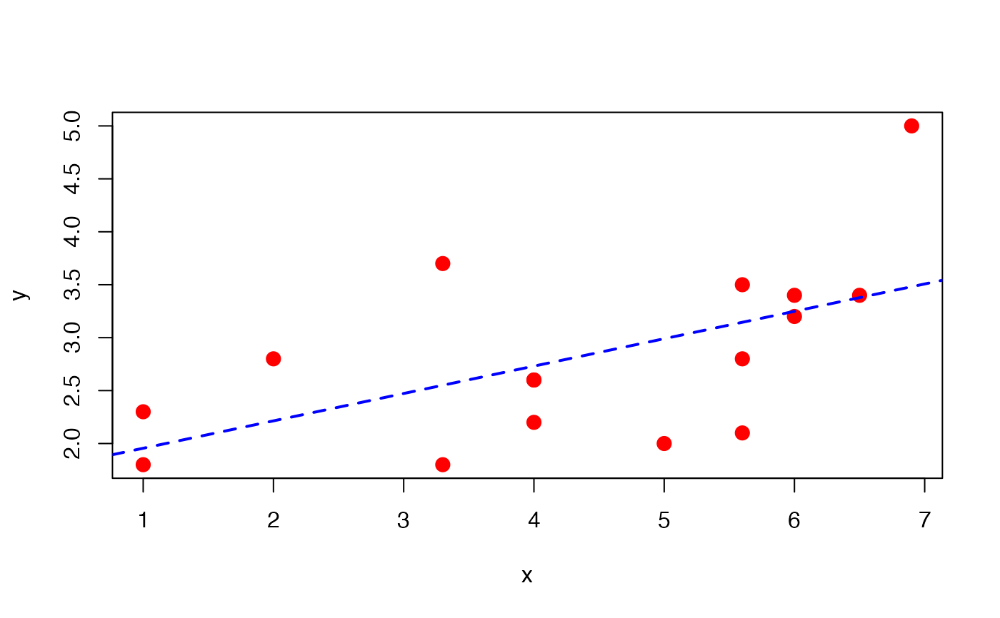

This function performs a hypothesis test for lack of fit in a simple regression model.
lack_fit_test(mod)A lm object.
lack_fit function returns the anova table.
# Example for section 4.5 Montgomery, Peck & Vining (2006)
x <- c(1.0, 1.0, 2.0, 3.3, 3.3, 4.0, 4.0, 4.0, 4.7, 5.0,
5.6, 5.6, 5.6, 6.0, 6.0, 6.5, 6.9)
y <- c(10.84, 9.30, 16.35, 22.88, 24.35, 24.56, 25.86,
29.16, 24.59, 22.25, 25.90, 27.20, 25.61, 25.45,
26.56, 21.03, 21.46)
plot(x=x, y=y, pch=20, cex=2, col="red")
mod <- lm(y ~ x)
abline(mod, lty="dashed", col="blue", lwd=2)

lack_fit_test(mod)
#> Lack of fit test - Anova Table
#> Sum Sq Df Mean Sq F value Pr(>F)
#> Regression 237.48 1 237.479 14.241 0.001839 **
#> Residuals 250.13 15 16.676
#> Lack of fit 234.57 8 29.321 13.188 0.001389 **
#> Pure error 15.56 7 2.223
#> Total 487.61 16
#> ---
#> Signif. codes: 0 '***' 0.001 '**' 0.01 '*' 0.05 '.' 0.1 ' ' 1
# Example 9.6 Montgomery & Runger (1996)
x <- c(1.0, 1.0, 2.0, 3.3, 3.3, 4.0, 4.0, 4.0, 5.0,
5.6, 5.6, 5.6, 6.0, 6.0, 6.5, 6.9)
y <- c(2.3, 1.8, 2.8, 1.8, 3.7, 2.6, 2.6, 2.2, 2.0, 3.5,
2.8, 2.1, 3.4, 3.2, 3.4, 5.0)
plot(x=x, y=y, pch=20, cex=2, col="red")
mod <- lm(y ~ x)
abline(mod, lty="dashed", col="blue", lwd=2)

lack_fit_test(mod)
#> Lack of fit test - Anova Table
#> Sum Sq Df Mean Sq F value Pr(>F)
#> Regression 3.4928 1 3.4928 6.6645 0.02174 *
#> Residuals 7.3372 14 0.5241
#> Lack of fit 4.3005 7 0.6144 1.4162 0.32882
#> Pure error 3.0367 7 0.4338
#> Total 10.8300 15
#> ---
#> Signif. codes: 0 '***' 0.001 '**' 0.01 '*' 0.05 '.' 0.1 ' ' 1